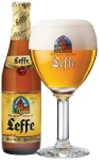
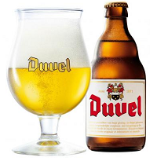
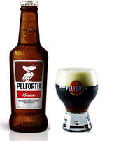
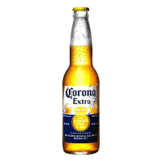
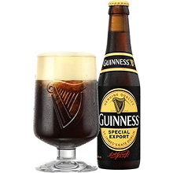
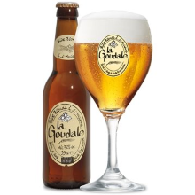

ATTENTION l'abus d'alcool est dangeureux pour la santé, 2 verres maximums et pas tous les jours.
Leffe
- La bière d'abbaye Leffe est une blonde dorée et cristalline à la mousse abondante et serrée.
- Elle a un nez doux d'alcool et assez puissant mais qui manque de finesse.
- La Leffe ou Abbaye de Leffe est une bière belge d'Abbaye reconnue.
- Créée en 1240 par les chanoines de l'ordre de Prémontré de l'abbaye Notre-Dame de Leffe et produite par la brasserie Artois à Louvain.

Duvel
- La Duvel est une bière naturelle dotée d’une amertume subtile, d’un arôme raffiné et d’un goût prononcé de houblon.
- Le procédé de brassage unique de 90 jours garantit un style authentique, un perlant délicat et un goût doux et agréable.
- La Duvel se distingue nettement des autres bières belges par son degré d’alcool étonnamment élevé (8,5 %).
- Son col de mousse généreux, son perlant délicat et sa texture en bouche douce comme de la soie.

Pelforth
- La Pelforth brune est une bière francaise.
- On trouve des arômes de caramel, de café, de miel et d'épices. Sa robe est brune sombre.
- Le nom Pelforth vient de "Pel" pour le pélican présent sur l'étiquette et "forte" car c'est une bière de caractère.
- Elle est brassée par la brasserie Pelforth détenue par Heineken.

Corona
- Corona est une marque de bière lager mexicaine produite dans plusieurs brasseries du Mexique par Grupo Modelo
- Créée en 1925 par le brasseur Cervecería Modelo.
- Corona est la marque de bière la plus vendue au Mexique.
- La Corona Extra est généralement servie avec un agrume.

Guinness
- Guinness est une marque de bière ainsi qu'une brasserie irlandaise.
- Fondée en 1759, celle-ci est devenue une entreprise de taille mondiale avec l'acquisition en 1986 de Distillers Company.
- Sa couleur brune presque noire provient de l'utilisation pour sa conception de malts hautement torréfiés et de grains d'orges grillés.
- La couche de mousse couleur crème qui coiffe la bière est le résultat d'un ajout d'azote durant le tirage.

Goudale
- La Goudale est une bière de garde, brassée à Arques, par la Brasserie de Gayant depuis 1994.
- D'après son étiquette, la Goudale tire son nom d'un élément historique : Au XIVe siècle, les bonnes bières étaient appelées Goudale, Goudalle ou Good Ale
- Elles se vendaient deux deniers le pot, chez un marchand nommé le Goudalier.
- La Goudale est une bière blonde de garde de fermentation haute et titre un degré d'alcool de 7,2 %.
